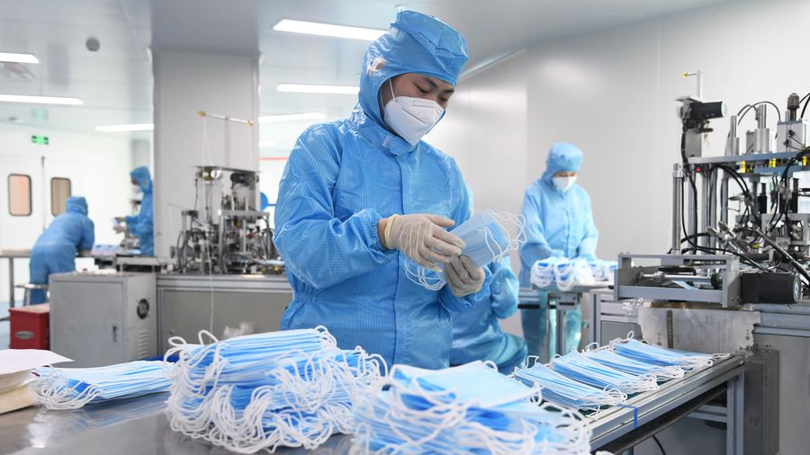

Plastics boast a unique and useful set of properties. They are polymers, long chains of molecules made from repeating links called monomers, often produced from chemicals like petroleum. Its molecular structure can be engineered to present different characteristics—to be flexible or hard, transparent or opaque. They are durable, strong, lightweight, water resistant, and relatively easy and inexpensive to manufacture. Most modern plastics are made from fossil fuels like natural gas or petroleum; but as new technology emerges, plastics are also being produced from renewable materials like corn or cotton. There are thousands of patented plastics spanning countless sectors, all with unique attributes that make them fit for purpose.
Plastic in our daily lives
In many applications, plastic is virtually irreplaceable because it is cheap, strong, lightweight, and resistant to corrosion. The most common uses of plastic are in packaging and building components, such as piping. In the medical industry, plastic is often key to contamination and infection control. Syringes, pipettes and gloves used in healthcare and biomedical research cannot be reused. While the excessive use of plastic packaging is concerning, some form of packaging is often necessary to maintain the hygiene or freshness of food, or maintain the integrity of a product during freight. Small or travel-size toiletries and personal hygiene products are sometimes seen as wasteful, but are vital in providing affordable sanitation options for some of our most vulnerable communities, such as the homeless or low-income families. With an estimated 70% of the world’s population living on less than US$10 a day, toiletries in single-serve sachets provide an affordable sanitation option in developing markets.70% of the world’s population living on less than US$10 a day,
Replacing plastic with other materials is neither simple nor straightforward, mainly due to the challenge of finding an alternative that combines all the most desirable plastic properties. Biodegradable alternatives—such as special plastics, paper, or cardboard—may well have a higher greenhouse footprint because of the amount of water or natural resources consumed in their production. A study conducted last year by the Nanyang Technological University in Singapore found that reusable plastic bags are more eco-friendly than paper and cotton alternatives, but only in cities and countries with a well-structured waste management system that prevents leakage.
The plastic waste problem is a waste management problem
While plastic is durable, this also means plastic waste can be trapped in our environment for centuries, if not managed well. While plastics deteriorate into fragments easily through wear and tear, their polymer chains only break
down into other smaller components at very high temperatures, such as during some chemical recycling processes. However, today only 15% of plastic waste is recycled.
The world still largely operates on the ‘linear economy’ model—sometimes known as ‘take-make-discard’—where raw materials are used to manufacture products, only to be disposed of at the end of their short lifetimes.
Transitioning to a more sustainable model is not rocket science, if we can remember the 3 Rs: Reduce, Reuse, Recycle—in that specific order of priority!
-
Reducing
our overall consumption is about respecting our natural resources, only using what we need, and refusing unnecessary excess. Take the Japanese ‘Mottainai’ lifestyle approach—which teaches respect for the planet and its natural resources by reducing wasteful behaviour, using only what is needed. -
Reuse
is key to increasing the lifespan of the things we use. This includes repairing or upcycling our items to give them a new lease on life. -
Recycling
the waste we eventually generate is key to closing the loop in a circular economic model.
A second life for plastic waste
Incorporating recycling as part of every sustainable waste management system is a key focus for us here at the Alliance. Recycling the plastic waste that is generated and returning it instead into the manufacturing chain reduces the need to produce virgin plastics, and unlocks the economic value of waste. Recycled plastic has recently been used to manufacture an expanding range of products, including furniture, roads, packaging, and clothing.Plastics can be sorted into two broad categories: easily recycled and hard-to-recycle. Easily recyclable plastics—such as PET in most bottles, or HDPE in pipes and containers—can be washed, ground into a powder, melted, and then extruded into pellets ready for reheating and remoulding. This process is known as mechanical recycling.
For other hard-to-recycle plastics—such as LDPE, polyethylene film, or contaminated plastics like unwashed food containers—they can sometimes be recycled by using chemical recycling. This is a process where the polymer structure of the plastic is changed and converted into feedstock that can replace virgin materials used in the production of plastics.
What do we do now?
Plastic recycling is a crucial step towards a circular economy, but achieving circularity calls for action at every point in the lifetime of a product: from design to waste management. At the Alliance, we focus on six action areas that advance our trajectory toward a circular economy and ending plastic waste in the environment. They are:-
Front-end Design
Designing products that can last long and are easy to repair, and eventually can be recycled. -
Access to Collection
Providing basic infrastructure enabling convenient and necessary recovery of waste, preventing leakage into the environment. -
Participation and Engagement
Raising awareness and inspiring participation in sustainable practices and clean-up. -
Sorting
The first step of any recycling system is sorting waste according to type, wet or dry; recyclable or non-recyclable; plastic, paper, metal, or glass. Sorting like this can happen right inside your home, or at a formal waste management facility. -
Processing
Scaling solutions of new advanced recovery and recycling methods, including both mechanical and chemical recycling. -
End Markets
Growing market demand for recycled materials from all recycling methods.
The world is beginning to accept that it is time to tackle the plastic waste problem. This also requires addressing the lack of proper waste management systems. Currently, more than 30% of the world does not have access to proper
collection and disposal of waste.
There is no silver bullet solution. It’s not about swapping from one single-use lifestyle to another, but instead about changing our behaviour to balance convenience and sustainability, and asking industry and governments to work
together to drive the best environmental solutions. Businesses ranging from the fashion to hospitality industries are pledging to be more circular, redesigning packaging, or using recycled materials; while researchers develop and
improve ways to make, sort, and recycle plastics; and governments are re-evaluating their waste management systems, making recycling more accessible for their citizens.
We need to build and scale other solutions concurrently. All these efforts help divert plastic waste from the environment and move us toward a sustainable circular economy—unlocking the value of our waste. It’s an ambitious task,
but with collective action it can certainly be achieved.